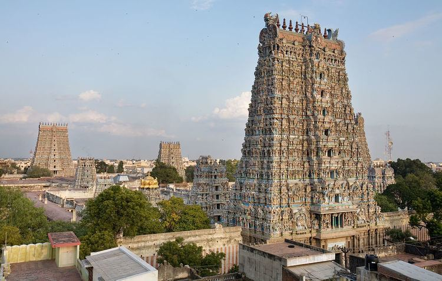

One of India’s most celebrated temples, dedicated to Goddess Meenakshi and Lord Sundareswarar.
14 towering gopurams (gateway towers), intricate sculptures, and the famous Aayiram Kaal Mandapam (Thousand Pillared Hall).
It’s the spiritual and cultural heart of Madurai, attracting millions of pilgrims and tourists annually.
Don’t miss the night ceremony where the idol of Lord Shiva is carried to Goddess Meenakshi’s chamber.